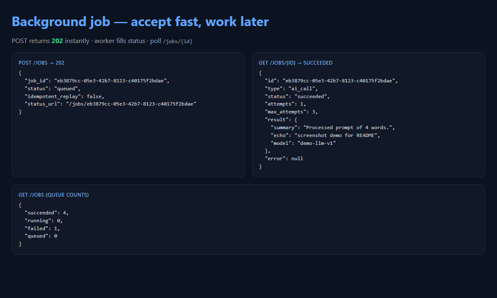

Job · Accept fast · worker · retries
Background Job Queue
POST returns 202 with a ticket. A worker does the slow work, retries with backoff, respects Idempotency-Key, and alerts on permanent failure.

Surface
| Method | Path | Meaning |
|---|---|---|
POST | /jobs | 202 · job_id + status_url |
GET | /jobs/{id} | status / attempts / result |
GET | /jobs | Queue counts |
GET | /health | Worker liveness |